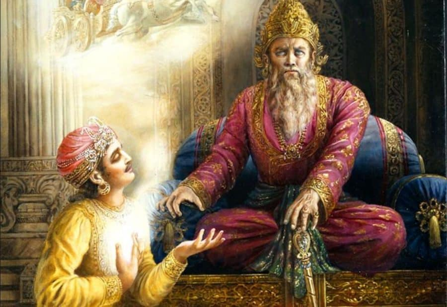
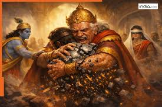
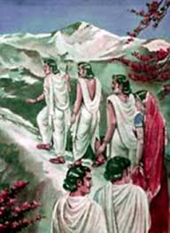
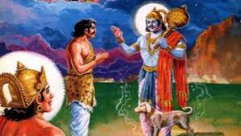

Pandavas then started for Hastinapur to meet Dhritarashtra. Dhritarashtra was fully aware of the happenings of the war through Sanjay, the priest of Drupada. Sanjay was blessed with the power of watching the war from a distance and narrated it to blind Dhritarashtra as it happened. Gandhari and Dhritarashtra were mad at Bheema for killing their sons, Duryodhana and Dushashana.


Krishna accompanied the Pandavas to meet Dhritarashtra and Gandhari. Vidur joined them to help console his brother, Dhritarashtra. Krishna spoke, “King Dhritarashtra, the war was inevitable. The war has hurt everyone. The Pandavas were left with no heir. The heat of the war forced both the parties, the Kauravas and the Pandavas, to perform many inhuman acts. Now is the time to open your heart and accept Yudhishthira as your son and bless the Pandavas.” Krishna’s words touched Dhritarashtra and he broke down on Vidur. Yudhishthira touched the feet of Dhritarashtra and Gandhari, they blessed the Pandavas. Yudhishthira was accepted as the king of Hastinapur.

Gandhari, however, was unable to excuse Krishna whom she blamed to be the root of exterminating her children. She cursed Krishna, “Let your family face the same as the Kauravas and be wiped out from the face of the earth.” Krishna knew that this was going to come sooner or later. The party then arrived to the place where Bheeshma was still resting, waiting for his departure from the earth. Bheeshma blessed the Pandavas and his soul left for the heaven. Dhritarashtra, Gandhari, Kunti and Vidur left for the forest to pass their time in meditation and prayers. Sanjay went along with them to take care of their needs. Unfortunately they all died in a forest fire and Sanjay came back to give this heart breaking news to the Pandavas. Yudhishthira declared to perform the Aswamedha Yajna to establish the supremacy of the Pandavas over other rulers of the area. The people were pleased to see justice coming back and peace prevailed. As time rolled on, Uttara, wife of Abhimanyu, the son of Arjuna and Subhadra, gave birth to Parikshit. He was the only heir left of Pandavas and was not killed by Ashwathama as he was in his mother’s womb. In few years Gandhari’s curse on Krishna began to work. The Yadav clan began to fight among themselves. Krishna and Balaram also died leaving none to succeed the throne.

When Pandavas heard the news of destruction of the Yadavas and Krishna’s demise, they decided to crown the young prince Parikshit and retire to Himalayas. They threw their weapons into the river and started for their endless journey to the top of the Himalayas along with Draupadi. To their surprise, a dog accompanied them. As they climbed up the mountain, four Pandavas brothers and Draupadi fell dead. The only ones survived were Yudhishthira and the dog who was following at the heels of the party. When they reached the top of the Himalaya mountain, Indra came on his chariot to get pious and truthful Yudhishthira to heaven. Yudhishthira paid his respect to Lord Indra and asked his companion dog to get into the chariot. Indra was shocked, “A dog to heaven?” When Yudhishthira refused to go to heaven without the dog, the God of Death, Dharmaraj Yama emerged out of the dog and blessed Yudhishthira. Yama was testing the steadfastness of Yudhishthira. After reaching heaven Yudhishthira joined his family but was surprised to see his cousin brothers settled in the heaven. When asked as what happened to the sins they committed on earth, Narada replied, “In heaven all are equal, the sinner or the pious ones. The happenings on the earth are nothing but the illusion created by our creator.” Thus ended the great story of Mahabharata the epic that the future generations of Indian will enjoy for ever.